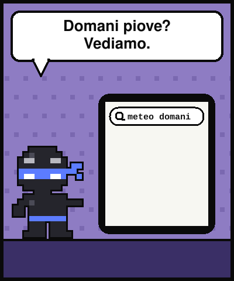
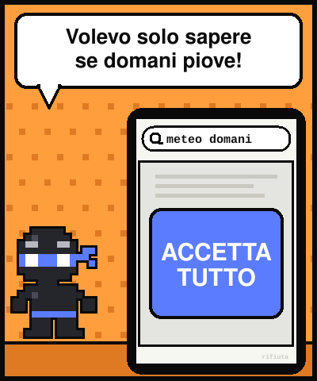
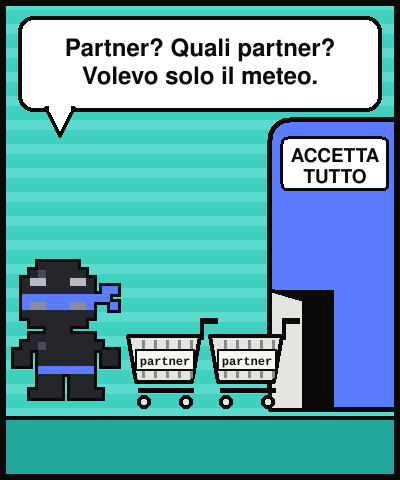
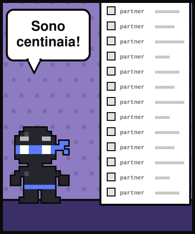
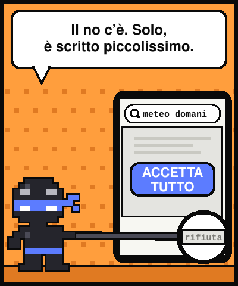
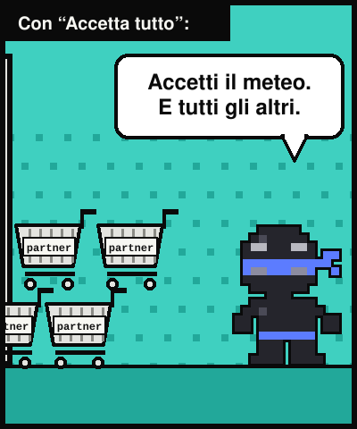
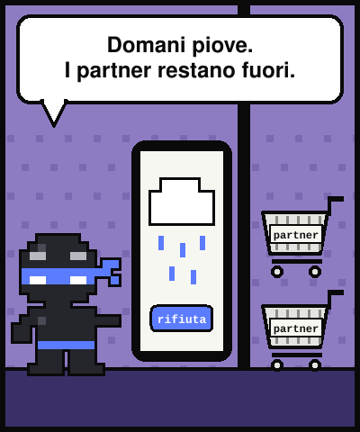
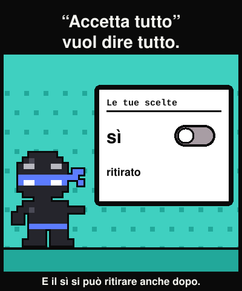

Lezione dal 2077 · n.005
Volevo una ricetta per la parmigiana. Per arrivarci ho firmato un accordo che non ho letto, con gente che non conosco.








Cerco «parmigiana di melanzane». Prima della ricetta, un muro:
Il sì è grande e colorato. Il no è grigio e nascosto.
Quel clic si chiama consenso. Il no vale anche dopo, ma costa più fatica. E hai dei diritti anche dopo il sì: accedere ai dati, correggerli, cancellarli, limitarli. Sono nel GDPR e si esercitano scrivendo, senza avvocato.
In Italia il Garante chiede che il sì e il no pesino uguale.
««Accetta tutto» è un pulsante grande perché la risposta giusta l'hanno scritta piccola.»